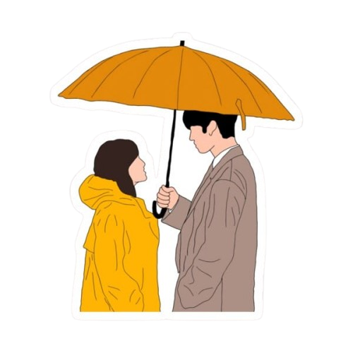

Pousando no Amor
(Crash Landing on You)
⭐ 4.9
A Doramania foi criada de dorameiro para dorameiro, aqui compartilhamos os melhores e mais emocionantes K-Dramas para fãs e curiosos.

Pra chorar no cobertor
Plot twists de explodir a cabeça
Coração quentinho
Viagem no tempo e magia

Choro, riso ou tensão
Pipoca, lámen ou tteokbokki
Hora de relaxar!
"Comecei dizendo que ia assistir só um episódio às 23h e fui dormir às 6h da manhã chorando pelo casal secundário."
"Chorei tanto no final de Pousando no Amor que até a Tyfany, minha cachorrinha, ficou me olhando assustada no sofá!"
"Fui assistir Vincenzo só pela ação e acabei viciado. A trilha sonora e as reviravoltas são absurdas."